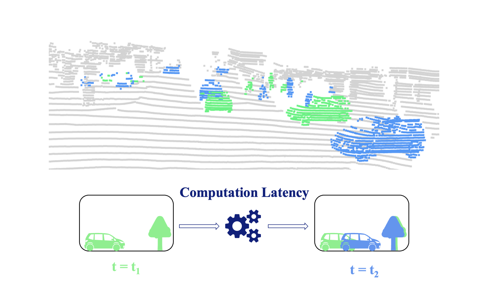
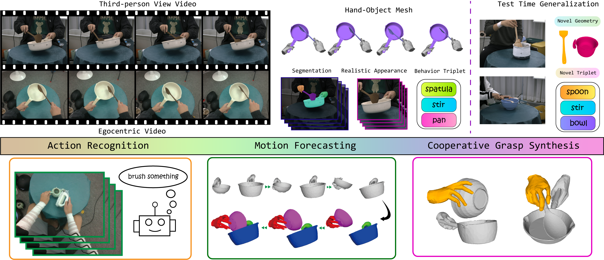

|
Ling Liu
I am a first-year master student in the Data and Artificial Intelligence at Institut Polytecnique de Paris (IP Paris). Previously, I obtained my bachelor's degree in Computer Science and Technology from the Beijing Institute of Technology (BIT). I was fortunate to be advised by Prof. Li Yi at IIIS, Tsinghua University (THU). My research interests center around 3D Computer Vision and Computer Graphics.
Email /
Github /
Google Scholar
/
LinkedIn
|
|
|
*Equal Contribution †Corresponding Author
|
|

|
4DSegStreamer: Streaming 4D Panoptic Segmentation via Dual Threads
Ling Liu*, Jun Tian*, Li Yi†
ICCV, 2025
project page
/
code
TL;DR:
4DSegStreamer is a new framework that enables existing segmentation methods real-time capable, balancing efficiency and accuracy for dense perception in dynamic environments.
|
|

|
TACO: Benchmarking Generalizable Bimanual Tool-ACtion-Object Understanding
Yun Liu, Haolin Yang, Xu Si, Ling Liu, Zipeng Li, Yuxiang Zhang, Yebin Liu, Li Yi†
CVPR, 2024
project page
/
code
/
arXiv
/
video
/
dataset
TL;DR:
TACO is a large-scale bimanual hand-object manipulation dataset covering extensive tool-action-object combinations in real-world scenarios, supporting test-time generalization to unseen object geometries and novel behavior triplets and benchmarking various generalizable research topics.
|
Honors/Awards
- IP Paris Scholarship, 2024
- Outstanding Graduate of Beijing Institute of Technology, 2024
- Finalist Prize, Award on The Mathematical Contest In Modeling, 2023
- 2nd Prize, Award on China Undergraduate Mathematical Contest in Modeling, 2022,2021
- Samsung Scholarship, 2022,2021
|
Template stolen from Jon Barron. Thanks for stopping by :)
Last updated: Feb, 2025
|
|
{kind=link}